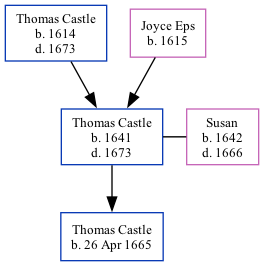

Thomas Castle 1641 - 1673
[ Home ] | [ Calendar ] | [ Surnames Index ] | [ Family History ]The child of Thomas Castle and Joyce EpsThomas Castle, the 8 times great-grandfather of Nigel Horne, was born in 16411 and married Susan (with whom he had 1 child, Thomas, ) in 1659.
He died in 1673 in Kent, England1.
Parents
- Thomas was born in 1614
- Joyce was born in 1615
Children
- Thomas was born on 26 Apr 1665
Citations
- Public Member Trees Online publication - Provo, UT, USA: The Generations Network, Inc., 2006.Original data - Family trees submitted by Ancestry members.Original data: Family trees submitted by Ancestry members.
Family Tree
Generated by ged2site. Last updated on Feb 19, 2025